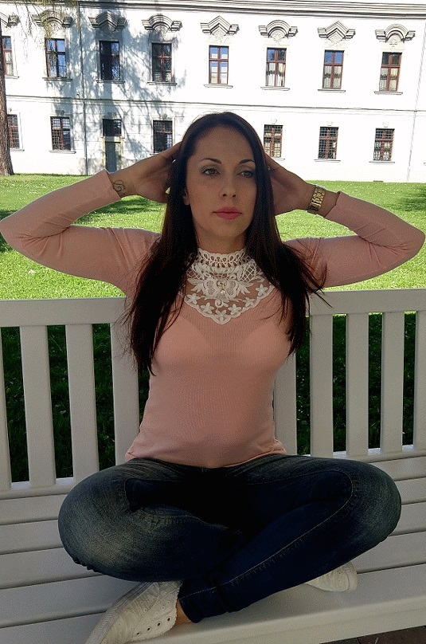

“Po 10 hodinách sa budete cítiť lepšie, po 20 hodinách budete vyzerať lepšie, po 30 hodinách budete mať nové telo”
Vitajte v občianskom združení Fit Pilates. Cieľom združenia je rozvíjanie aktivít v oblasti telesnej činnosti, vzdelávania, zdravého životného štýlu.Každodenné otázky života obyvateľstva ako sa zbaviť častých bolestí chrbtice prostredníctvom cvičenia. Vedenie mladých ľudí, detí k správnemu držaniu tela, vzdelávanie žien, ktoré majú problém s otehotnením. Viesť postihnuté deti, deti trpiacich hyperaktivitou k správemu cvičeniu a tým odreagovaniu sa od ich problémov. Odbúranie stresových faktorov zo života pomocou správnych cvičení. Za účelom naplnenia tohto cieľa bude občianskeho združenie najmä rozvíjať svoje aktivity poradenskou, vzdelávacou, cvičebnou a informačnou činnosťou.
Poskytujem individuálne hodiny, kolektívne hodiny, hodiny zamerané na prácu s deťmi, s tehotnými ženami, so seniormi, s telesne postihnutými deťmi a dospelými. Pracujeme s pomôckami overball, fitball, therabandy dlhé a krátke, bandy kratke, kruhy, flowing tone –disky, valce, činky.
“Pilates is complete coordination of body, mind and spirit.”
Cvičenia a ceny
Kolektívne hodiny
Pre rýchle výsledky na tele. Vhodné pre začiatočníkov aj pokročilých.
Hodina: cvičí sa každý deň v týždni po 60 minút.
Účinky: hodiny sú zamerané na odstránenie nežiadúcich bolestí v chrbtici a rýchly boj s podkožným tukom, ktorý sa nahromadí nesprávnym stravovaním a stresom.
Cieľové partie: chrbtica, brucho, ruky, stehná, zadok.
Intenzita: ideálne je chodiť 2x v týždni pre dosiahnutie výsledkov.
Cena: jednorázový vstup 3.80 €, 10 vstupová permanentka 36 €.